Changes to the kind of display of the network can be performed in the
Setup panel. All settings become valid only after the button
 is clicked. The whole display window is then redrawn.
is clicked. The whole display window is then redrawn.
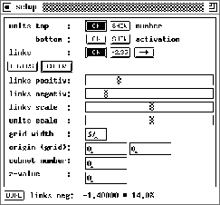
The button
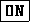
toggles the display of information which can be selected with the button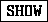
. The unit name, unit number, or the z-value (3D coordinate) can be displayed above the unit, the activation, initial activation, bias, or output of the unit below the unit. The numerical attribute selected with the button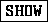
at the bottom of the unit (activation, initial activation, output, or bias) also determines the size of the unit in the graphical representation.It is usually not advisable to switch off top (number or name), because this information is needed for reference to the info panel. An unnamed unit is always displayed with its number.
 ,
,  ,
,  .
.
 determines whether to draw links at all (then
determines whether to draw links at all (then
 is inverted),
is inverted),
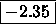
displays link weights at the center of the line representing the link,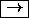
displays arrow heads of the links pointing from source to target unit. sets the 2D--display colors. On monochrome
terminals, black on white or white on black representation of the
network can be selected from a popup menu. On color displays, a
color editing window is opened. This window consists of three parts:
The palette of available colors at the top, the buttons to select
the item to be colored in the lower left region, and the color
preview window in the lower right region.
sets the 2D--display colors. On monochrome
terminals, black on white or white on black representation of the
network can be selected from a popup menu. On color displays, a
color editing window is opened. This window consists of three parts:
The palette of available colors at the top, the buttons to select
the item to be colored in the lower left region, and the color
preview window in the lower right region.
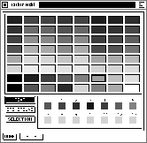
A color is set by clicking first at the appropriate button (, , or
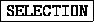
) and then at the desired color in the color palette. The selected setting is immediately displayed in the color preview window. All colors may be set in any order and any number of times. The changes become effective in the corresponding 2D--display only after both the setup panel and the color edit panel have been dismissed with the button.There are two slidebars to set thresholds for the display of links. When the bubble is moved, the current threshold is displayed in absolute and relative value at the bottom of the setup panel. Only those links with an absolute value above the threshold are displayed. The range of the absolute values is
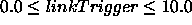
(see also paragraphNote: The links that are not drawn are only invisible. They still remain accessible, i.e. they are affected by editor operations.
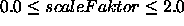
. A scale factor of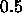
draws the unit with activation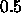
with full size. A scale factor of draws a unit with activation only with half size.
only with half size.